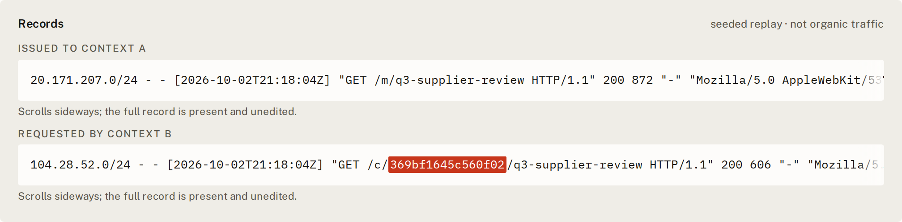
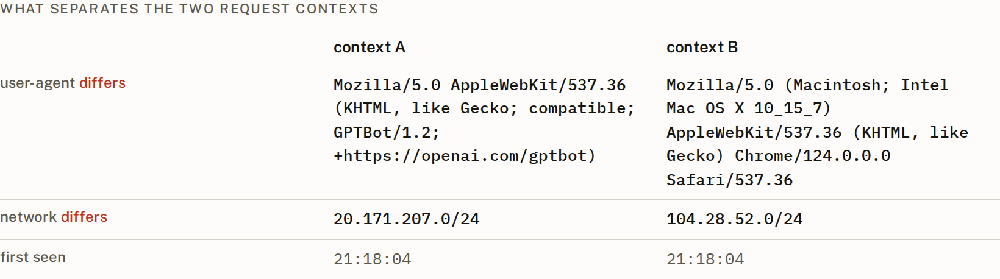
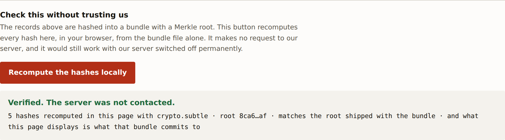

Watch a secret move between AI clients.
A tool for anyone running a website. It gives every bot that visits its own secret link, so that when a different bot comes asking for that link, you have a dated record of it instead of a hunch.

In plain terms
You cannot tell which bots are connected
Automated clients hit your site all day. Sometimes they are related: one finds something, another turns up for it. You have no way to know. Every identifier a client shows you — its user-agent, its address — is one the client chose, so comparing them is guesswork. And when you are sure, you have nothing to show anyone else.
It plants something only one of them was shown
Each automated visitor is served a unique link that nobody else is ever given. If a different one later asks for that exact link, that is written down: two access-log lines, the same secret string in both, with the time between them. Nothing is guessed, and nothing is blocked.
A file that holds up without you
The records are hashed into a bundle. Anyone you hand it to can check it in their own browser, offline, with your server switched off — so they do not have to take your word for any of it. That is the whole point of the thing.
Who it is for: someone running a site or a public API who has been asked to show what happened, not just block it. What it will not do: tell you that two clients are two people. It cannot, and it says so on its own face — see the limits.
Why guessing from what clients look like is failing
“did get rate-limited (‘please stop rinsing my site’) and continued rinsing the API with requests regardless” … he cannot tell “whether it’s the same swarm, let alone the same agents”. Operator of the UNCTADstat API, September 2026
Cloudflare documented an undeclared crawler reaching robots.txt-blocked, newly purchased, unindexed domains at 3–6m requests a day — while presenting a desktop Chrome user-agent and rotating ASNs. Every identifier a client shows you is one the client chose. So stop reading identifiers, and plant something instead.
How it works
Three steps. The middle one is the only interesting one.
Each visitor gets its own secret
An automated request is issued a canary URL derived as HMAC(salt, path | request-context). A human is never minted for and never enters the ledger.
Someone else asks for it
The canary returns 200 for anyone — a 404 would tell the second client it was a trap. A fetch by a context other than the one it was issued to is written as a sighting, with both raw log records.
The record outlives the server
Rows are hashed into a Merkle-rooted bundle. A reader recomputes it offline. No server, no network, no trust in us.

Try it
Four ways in, shortest first. Each one shows you something different, and none of the first three needs anything installed.
The 110-second video
The whole thing end to end: a secret issued to one client and fetched by another, verified offline, and then the page is lied to and catches it.
Open the evidence and try to break it
Press Recompute the hashes locally and watch your network panel stay
empty. Then open the page's own data.js, change any record or any
number on screen, and press it again. It names what no longer matches.
Run it yourself
Three commands, no credentials, no network after the install. Then open
viewer/index.html from disk, with nothing running.
git clone https://github.com/itssaharsh/canary-maze && cd canary-maze pip install -r requirements.txt make verify # five properties, each able to fail make demo # builds the offline viewer
5 min · read — what it found on the organizers' own corpus and on the public dump, with the two claims we withdrew: docs/RESULTS.md. The code is at github.com/itssaharsh/canary-maze.
Check this without trusting us
This is the part that makes it evidence rather than a dashboard. The verifier is stdlib Python. It makes no network call and does not need the server running — it would still work if this site were taken down permanently.
$ make verify Canary Maze :: verify sightings before -> after 0 -> 1 OK gate turned a browser away, stored nothing turned away 1, in ledger 0 OK bundle verifies offline OK an edited row is caught and named OK laundered rows cannot reach the bundle byte-identical OK PASS

crypto.subtle, from the bundle
file alone. Edit any record — or any counter the page displays — and it names what
no longer matches.What is real here
Every number below is generated from the artefact this page links to — the seeded replay, which is the deterministic demo a judge can reproduce offline. It observes nobody, so its organic count is 0 by construction. The live public surface is reported separately, and generated the same way, in docs/RESULTS.md.
| Secrets issued | 1 | to automated contexts, through the real gate and mint |
|---|---|---|
| Sightings in this replay | 1 | two clients we control, driven through the real gate, mint and detector |
| Organic sightings here | 0 | 0 by construction: a scripted replay observes nobody |
| Human requests stored | 0 | must be 0 — a non-zero value would mean a human reached storage |
| Hashes in the bundle | 5 | each one recomputed in your browser by the button above |
| Tests | 251 | make verify PASS |
What a sighting does not establish
The most important section, and it is on the product’s own face too.
- It is not two operators. One operator can rotate addresses:
A sighting establishes that the secret moved between two request contexts. It does not establish that they are two different operators - one operator can rotate addresses. In the organizers' collusion.wiki dump, the busiest named agent label wrote 317 revisions from 308 distinct addresses. The schema has no
actortable and no join that would produce one. - The HMAC bounds provenance, not distinctness. A secret that verifies was issued by us and cannot be forged. That says nothing about how many actors touched it. An earlier draft of this project claimed otherwise; that claim was false and is recorded as false so it cannot return.
- Two clients can touch one secret without having talked — one may have followed the other through the same link graph. The bundle records a shared artifact, not intent.
- Tokens can be stripped. A public tool detects canary tokens without triggering them. A motivated client defeats this.
- The prior art is close. arXiv:2605.13706 already mints per visitor and keeps the ledger. What is new here is the sighting channel and the offline bundle, not the minting.
- “Without trusting us” is narrower than it sounds. The operator computes the rows, the leaves and the root. The bundle proves nothing has been edited since it was built; it does not prove it was built honestly. Publishing the root somewhere we do not control would close that, and this build does not.
- A client can manufacture a second context against itself by
changing its user-agent, or by adding or dropping one of the standard request
headers the context id looks at. (Adding an arbitrary header, or reordering them,
no longer does it — that was a real defect, and it is recorded as
F-0006.) The diff above makes the attempt visible, because the network would read as matching, but nothing refuses the record. - No organic sighting yet. Third-party fetchers have reached the live surface and been recorded — but only ones the operator handed a URL to, so every one of them is reported as paste-triggered and none is counted as organic. The operator publishing a URL is itself a row in the ledger, written before the URL is handed over, which is what makes that separation checkable rather than asserted.
- The ledger records what an edge reported. The public surface runs on a host that does not refuse crawlers; the ledger is on the operator's machine, and the two are joined by a signed hand-off. Every row names the edge that reported it, and a row this process saw itself is marked differently from one it was told about.